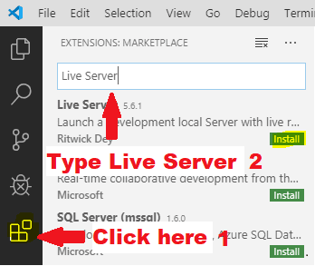
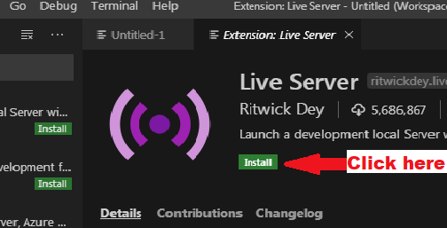
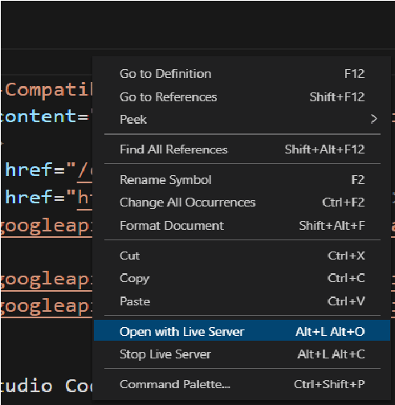

Setup for Visual Studio Code
Download Live Server
1.Open Visual studio Code.

2.Install Live Server

3.Start Live Server. When opening the html file Right Click on the screen and select open live server or press Alt+L and immediately press Alt+O.

Why To Install Live Server?
- Normally, when you make a change in your code or write something new, you need to refresh the page manually to see the changes.
- In other words, if you make 100 changes in your code each day, you need to refresh the browser 100 times.
- The live-server extension, however, automates does this for you. After installing it, an automated localhost will be able to run in your browser, which you can start with a single button.
- Once you make changes in your code or write something new, after saving it, the browser will auto-refresh itself. Then you will be able to see the changes quickly and automatically.